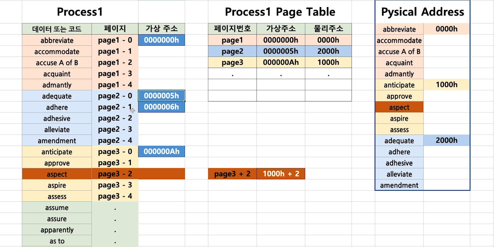

Cpu 스케줄링을 통해 여러 프로세스의 응답속도를 향상 시켰다. 그러나 이러한 성능 향상을 위해서는 메모리 또한 많은 프로세스를 유지할 수 있어야한다.
메모리는 각각 주소가 할당된 일련의 바이트로 구성되는데 , cpu는 program counter 가 지시하는대로 메모리로부터 다음 수행 명령어를 가져온다.
기본 하드웨어
모든 실행되는 명령어들은 cpu 가 직접 접근할 수 있는 메인 메모리와 레지스터에 존재해야한다. 데이터가 메모리가 없다면 cpu 동작전에 메모리로 반드시 이동되어야한다.
cpu의 접근 속도
- register : cpu 1clock
- memory : 메모리 버스를 통해 전송되므로 레지스터보다 지연 (stall) 발생
메모리의 접근 속도로 인한 stall 현상 때문에 cpu 와 메모리 사이에는 cache 를 둔다. 이때 cache 는 cpu 내부에 존재하며 운영체제의 도움 없이 동작할 수 있다.
각각의 프로세스가 독립된 메모리 공간을 가지도록 보장해야한다. 개별적인 프로세스별 메모리 공간을 서로를 보호하고 병행 실행을 위해 여러 프로세스가 메모리에 적재되게 하는것이 필수적이다.
- 기준 레지스터 : 가장 작은 합법적인 물리 메모리 주소의 값
- 상한 레지스터 : 주어진 영역의 크기를 저장
다른 프로그램이 메모리에 접근하면 운영체제는 Trap을 발생한다.
이때 운영체제만이 레지스터 값을 변경할 수 있으며 특권명령을 사용한다. 이는 사용자 프로그램이 레지스터의 내용을 변경하는 것을 방지할 수 있다.
주소의 할당
프로그램이 디스크에 이진 실행 파일로 저장되어있을때 이를 실행시키면 메모리로 가져와 프로세스로 배치한다. 그 이후에 cpu에서 이를 사용할 수 있게된다.
전통적으로 메모리 주소 공간에서 명령어와 데이터 바인딩은 그 바인딩이 이루어지는 시점에 따라 아래와 같이 분류 된다.
- 컴파일 시간 바인딩 : 프로세스가 메모리내에 들어갈 위치를 컴파일 시점에 알 수 있다면 절대 코드
를 생성할 수있다. 그러나, 만일 이 위치가 변경되면 다시 컴파일 되어야한다. - 적재 시간 바인딩 : 프로세스가 메모리 내 어디로 올라오게 될지를 컴파일 시점에 알지 못하면 컴파일러는 일단 이진 코드를 재배치 가능 코드로 만든다. 심볼과 진짜 번지수와의 바인딩을 프로그램이 메인 메모리로 적재되는 시점에 이루어진다.
- 실행 시간 바인딩 : 프로세스가 실행하는 중간에 메모리 내의 세그먼트로부터 다른 세그먼트로 옮겨질 수 있는 경우 ,MMU가 필요하다
int count 와 같은 변수에 실제 메모리 주소 값을 표현하는데 이를 심볼이라고 한다. 이를 적재 시간에 바인딩하여 재배치 가능 코드로 변경하면 , 이 프로세스의 특정 바이트에 위치하게 된다.
논리 대 물리 주소 공간
CPU 가 생성하는 주소를 논리 주소 (가상 주소) 라하며 메모리가 취급하게 되는 주소를 물리 주소 라고 한다.
컴파일 시점, 적재 시간 에 바인딩 시에는 논리 주소와 물리주소는 같은 값을 갖는다. 그러나 , 실행 시간 바인딩의 경우에는 다른 값을 갖는다.
프로그램이 실행 중에는 가상 주소를 물리 주소를 바꾸어 주는데 이를 MMU ( memory manage ment unit) 이 수행한다.
프로세스는 실행 시간중에 실제 메모리 위치로 논리 주소를 매핑한다. 프로세스는 오직 논리 주소에만 접근하고 실제 물리 주소에는 하드웨어 ( MMU )가 접근한다.
동적 적재 dynamic loading
프로세스의 전체는 미리 메모리에 올라와야하는데, 프로세스 전체의 크기가 메모리보다 커서는 안된다. 이를 위해 동적 적재를 사용한다.
- 각 코드 블록이 실제 호출되기 전까지는 메모리에 올라오지 않고 재배치 가능한 상태로 디스크에서 대기한다.
- 루틴이 다른 루틴을 호출 하면 이미 메모리에 적재되었는지 확인하고 적재되어 있지 않다면 다음을 수행한다.
- 재배치 가능 연결 적재기 ( relocatable linking loader) 가 불려 요구된 루틴을 메모리에 가져오고 cpu는 중단되었던 루틴으로 보내진다.
동적 적재는 루틴이 필요한 경우에만 적재되므로 아주 간혹 발생하면서 실행할 코드가 많은 경우에 유리하다.
동적 연결 공유 라이브러리 Dynamic Linking & shared libraries
DLL는 사용자 프로그램이 실행될때 사용자 프로그램에 연결되는 시스템 라이브러리이다.
동적 적재와 유사한데, linking 작업이 실행시기까지 미루어 지는것이다. 이는 각 프로세스간에 공유 가능할 수 있다는 장점이 있다. 만일 이 기능이 없다면 각 프로세스는 시스템 라이브러리의 사본을 프로그램 마다 포함해야한다.
페이징을 사용하여 구현한다.
동적 연결 공유 라이브러리는 운영체제의 도움이 필요한데, 여러 프로세스들이 각자의 공간만을 엑세스 할 수 있도록 보호되고, 운영체제를 통해 같은 메모리 주소를 공유할 수 있게 되기 때문이다.
연속 메모리 할당
메인 메모리는 운영체제를 위한 공간, 사용자 프로세스를 위한 공간 두 부분으로 나누어진다.
여러 사용자 프로세스를 사용자 프로세스공간에 동시에 상주시켜야하는데, 연속적 메모리 할당은 각 프로세스와 다음 프로세스가 인접한 하나의 메모리 영역에 적재 된다.
메모리 보호
상한 레지스터와 재배치 레지스터를 통해 메모리 보호를 한다. 거기에 MMU 가 동적으로 논리 주소와 물리주소를 매핑한다.
Cpu 스케줄러가 문맥 교환을 할때 재배치,상한 레지스터를 통해 정확한 값을 적재한다.
메모리 할당
가변 파티션 기법은 운영체제가 사용가능한 메모리 부분과 사용중인 부분을 나타내는 테이블을 유지하고. 사용가능한 메모리 블록인 hole 에 프로세스들을 적재한다. 어느 hole에 프로세스를 배치하느냐에 따라 아래 세가지 방식이 있다.
- 최초 적합 : 첫번째 hole 에 배치
- 최적 적합 : 크기가 가장 알맞은 hole 에 배치
- 최악 적합 : 가장 큰 hole에 배치, 배치 이후 생성되는 hole이 크기 때문에 다른 프로세스를 배치할 수도 있다.
단편화 fragmentation
- 외부 단편화 :프로세스를 적재하고 제거함을 반복하다보면 작은 조각들이 분산되게 존재하는데 이를 외부 단편화라 한다.
- 내부 단편화 : 메모리 공간을 아주 작은 크기로 분할하고 이를 정수배로 할당해주어도 약간의 공간이 사용되지 못한다. 이를 내부 단편화라고 한다.
단편화 해결책
- 압축 compaction : 메모리 모든 내용을 한군데로 몰고 모든 가용 곤간을 다른 한군데로 몰아서 큰 공간을 만든다. 실행시간 바인딩 방식에만 가능한데 , 기준 레지스터의 값을 변경해주면 된다.
- 페이징 : 논리 주소 공간을 여러개의 비연속적인 공간으로 나누어 필요한 크기의 공간이 가용해지는 경우 물리 메모리를 프로세스에 할당하는 방법
페이징
이전까지의 내용은 프로세스를 연속된 메모리 공간에 할당했을 때를 상정한다. 그러나 연속 메모리 할당방식은 외부 단편화와 압축을 해주어야하는 문제점이 존재한다. (내부 단편하는 해결 하지 못함을 의미한다.) 이를 해결하기 위해 현대 OS 는 페이징 기법을 사용한다.
물리메모리를 Frame 으로 불리는 크기 블록으로 나눈다. 논리 메모리는 page 라 불리는 같은 크기의 블록으로 나눈다.
Cpu 에서 나오는 모든 주소는 페이지 번호 , 페이지 오프셋 두개로 구성 된다.
- 페이지 번호 : 페이지 테이블에 엑세스할 때 사용
- 페이지 테이블 : 물리 메모리의 각 프레임의 시작 주소를 저장 , 프로세스마다 하나씩 존재
- 페이지 오프셋 : 프레임 안에서의 위치
MMU 는 아래와 같이 동작한다.

페이지 테이블은 기준, 상한 레지스터를 사용하는 재배치 레스터를 통한 mmu와 유사하다. 차이점은 논리 주소를 페이지 테이블에 유지하여 물리주소로 매핑한다는 점이다.페이지 특징
- 프로그래머는 메모리를 연속적으로 인식하게 하지만 실제로는 프레임 단위로 분산되어 있음
- 이 간극은 주소변환 하드웨어에 의해 해소된다.
- 논리 - 물리 주소 매핑은 운영체제에 의해서만 관리 된다.
하드웨어 지원
단순한 방법으로는 페이지 테이블을 전용 레지스터 세트로 구현하면 페이지 주소 변환의 속도가 빠르다. 그러나 이방식은 큰 페이지 테이블에 사용할 수 없다.
그래서 페이지 테이블을 메인 메모리에 저장 후에 페이지 테이블 기준 레지스터 PTBR 를 사용하여 페이지 테이블을 가리키게 한다. 문맥 교환이 발생했을 때 레지스터의 값만 변경하면되서 속도를 향상시킬 수 있다.
단점 또한 존재하는데, 문맥 교환의 속도는 빨라지지만 두 번의 메모리 엑세스가 요구되기 때문에 느려질 수 있다.
TLB; translation look-aside buffers
앞서 설명한 PTBR 이 메모리에 두 번 엑세스해 성능이 저하되는 현상을 해소하기 위해 사용되었다.
소형 하드웨어 캐시를 사용하는 TLB 는 매우 빠른 연관 메모리로 구성되어있다. TLB 는 페이지 테이블의 일부분만 저장하고 Cpu가 논리주소를 생성시에 MMU 는 우선 TLB 에 페이지 번호의 유무를 확인한다.
또, TLB 가 가득 찼을 경우 LRU ( least recently used ) , RoundRobin 방식등을 활용하여 교체할 항목을 결정한다.
보호
프로세스는 물리 메모리에 접근하기 위해 페이지 테이블을 거쳐야 한다. read only, read-write 를 보호 비트를 사용하여 정의하는데 이는 페이지에 대한 쓰기 권한을 검사할 수 있다.
페이지 테이블의 각 요소에 유효/무효 비트를 추가하여 프로세스가 해당 페이지에 대한 접근이 합법적인지를 검증할 수 있다.
PTLR ; page table length register : 프로세스가 모든 페이지에 대해 페이지 테이블에 등록하는것은 낭비이므로 페이지 테이블의 크기를 나타내는 페이지 테이블 길이 레지스터를 사용한다. 프로세스가 제시한 주소가 유효한 범위에 있는지 모든 논리 주소값과 PTLR 값을 비교한다.
페이지 테이블의 구조
계층적 페이징
페이지 테이블의 크기가 매우 커졌을 때 페이지 테이블을 메모리에 연속적으로 할당하지 않기위해서 2단계 페이징 기법을 사용해 페이지 테이블이 페이지 다음 계층의 페이지 테이블을 가리키게 하는 방법이다.
바깥 페이지 테이블에서 시작해 안쪽으로 들어오는 방식을 forward mapped 페이지 테이블 이라고도 한다. 그러나, 이방식 또한 바깥 페이지 테이블에 데이터가 많이 적재된다는 단점이 있어 64 비트 운영체제 환경에서는 상용이 어렵다.
해시 페이지 테이블
64 비트 운영체제에서 계층적 페이징 방식이 부적합하기 때문에 해시테이블을 사용한다. 충돌을 방지하기 위해 아래의 요소들을 필드로 사용한다. 해시함수로 페이지 번호가 가리키는 해시 테이블로 이동후에 연결리스트를 사용해 가상 페이지 번호를 비교 후 실제 물리 주소를 얻는다.
- 가상 페이지 번호
- 사상되는 페이지 프레임 번호
- 연결 리스트상의 다음 원소 포인터
역페이지 테이블
페이지 테이블을 사용시에 운영체제는 요소들을 오름차순으로 정렬하여 사용하는데 항목의 개수가 많아지면 물리 메모리를 찾기 위해 많은 물리 메모리를 소비한다. 그래서 역페이지 테이블 방식을 사용한다.
페이지 테이블에 메모리 프레임마다 한 항목씩 할당하여 시스템 전체에 하나의 페이지 테이블이 존재하게 한다. 프로세스를 식별하기 위해 PID 를 추가적으로 저장해야한다. pid 와 페이지 테이블 번호로 요소를 찾으면 오프셋을 통해 실제 물리메모리 주소값을 찾는다.
이러한 구조로 한번에 하나의 주소만 실제 물리 주소와 매핑이 가능하다. 이 때문에 공유 메모리 사용이 불가능하다.
스와핑
기본 스와핑 : 백업 저장장치에 프로세스 전체를 스왑 아웃 하고 메타 데이터를 유지한다. 그이후에 프로세스가 활성화되면 스왑인 한다.
페이징에서 스와핑 : 전체 프로세스를 스와핑 하는 방식은 많은 시간이 소요된다. 그래서 일부 페이지만 스와핑 하는 페이지 -아웃 , 페이지- 인 방식을 사용한다.